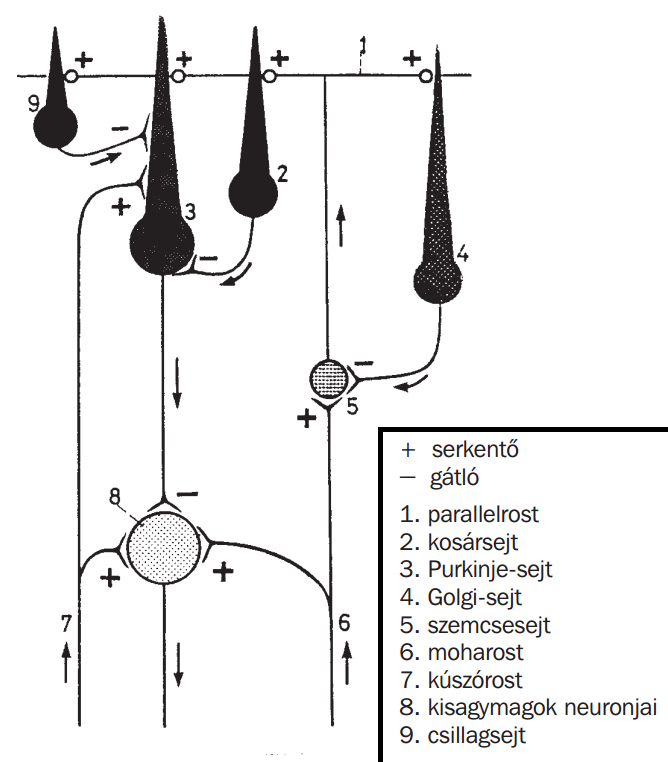

tömlős zsigerek falszerkezete
- tunica_mucosa = nyálkahártya
- epithelium
- lamina_propria ➜ laza ktsz + sejtekben gazdag!
- lamina_muscularis ➜ simaizom
- tela_submucosa ' ➜ 'még lazább' ktsz + sok ér & nyirokér
- tunica_muscularis '
- stratum_circulare
- stratum_longitudinale
- innentől 2féleképpen alakulhat
- ha NEM borítja peritoneum/pericardium/pleura ➜ tunica_adventitia '
- ha borítja peritoneum/pericardium/plerura
- tela_subserosa
- tunica_serosa ➜ lamina_propria + mesothelium
- lamina_propria ➜ foveolae_gastricae nevű gödröcskék vannak, melyeket a plicae_villosae-k választanak el egymástól

- gyomorban a lamina_propriaban van mindig 1-1fajta mirigy
- cardia ➜ glandulae_cardiacae(Schaffer-mirigyek)
- fundus ➜ fundusmirigyek
- pylorus ➜ glandulae_pyloricae
- pylorus ➜ solitaer nyiroktüsző ()
- bélbolyhok' ➜ lamina_propria 'kiboltosulása'
- Kerckring-redők' ➜ tela_submucosa 'kiboltosulása'
- tela_submucosaban
- duodenum ➜ Brunner-mirigyek
- jejunum ➜ semmi speciális
- ileum ➜ Peyer-plaque
- belső longitudinális
- középső cirkuláris
- külső longitudinális ➜ ureternél még nincs!!
általános felépítésük
TÁBLÁZAT
| epithelium | minusz/plusz ' réteg | 'adventitia vs (sub)serosa' | egyéb | ||
|---|---|---|---|---|---|
| nyelőcső | TrEnsLh | plexus submucosus Meissneri, plexus myentericus Auerbachi ' |
adventitia ' | ||
| gyomor | 1rHh | (sub)serosa | NYISD MEG |
||
| vékonybél | 1rHh + kehelysejt | Lieberkühn-kripták (glandulae intestinales) | NYISD MEG |
||
| vastagbél | 1rHh + kehelysejt | plica semilunaris tela submucosa 'kiboltosulása' |
|||
| féregnyúlvány | 1rHh + kehelysejt | nyiroktüszők (tela_submucosaban) | |||
| epehólyag | 1rHh + kefeszegély(mikrobolyhok) | lamina_muscularis, tela_submucosa |
tunica_muscularis ➜ rétegződés nincs | ||
| húgyvezeték | urothelium pars spongiosa (urethra) már TrHh |
adventitia ' ' | |||
| húgyhólyag | tela_submucosa(trigonum vesicae területén) | ||||
| húgycső | lamina_muscularis, tela_submucosa |
||||
| ondóvezeték | elején 2mHh + stereocilium végén TmHh |
||||
| ondóhólyag | 1m/2m-Kh/Hh | tunica_muscularis ➜ rétegződés nincs | |||
| petevezeték | 1rHh kinocilium + szögsejt | (sub)serosa | ' | ||
| hüvely | TrEnsLh | adventitia | |||

plexus_submucosus_Meissneri & plexus_myentericus_Auerbachi ➜ hol vannak? funkció?
| előfordulás | funkció | ||
|---|---|---|---|
| plexus_submucosus_Meissneri | gyomor-bél traktus falában | tela_submucosa | mirigyek működését szabályozza |
| plexus_myentericus_Auerbachi | tunica_muscularis két rétege közt | izmok mozgását szabályozza | |
bőr rétegeinek felsorolása (59)
- epidermis ➜ TrEsLh
- dermis = cutis = irha ➜ fibroelasztikus ktsz
- hypodermis = subcutis = tela_subcutanea = bőralja ➜ laza ktsz
epidermis rétegei és jellemzésük (59)
- itt lévő sejtek mitózisa pótolja a sejteket (kb. 30nap alatt jutnak a felszínre)
- keratohyalint tartalmaznak
- basophil festődésű
- eosinophil festődésű
- sejteknek nucleusa nincs már, elhalásuk megkezdőtött
- vékony réteg
- elhalt sejtek tömege
- vastag réteg
Ismerd Fel!

1 ► stratum_germinativum
2 ► stratum_polygonale = stratum_spinosum
3 ► stratum_granulosum
4 ► stratum_lucidum
5 ► stratum_corneum
6 ► ktsz papilla
7 ► verejtékmirigy kivezetőcsöve

| stratum_basale |
|
|---|---|
| stratum_polygonale | itt lévő sejtek dezmoszómákkal(tüskeszerű nyúlvány) kapcsolódnak egymáshoz |
| stratum_granulosum |
|
| stratum_lucidum |
|
| stratum_corneum |
|
| felfele haladva egyre vékonyodnak a sejtek: basale Hh, polygonale Kh ... lucidum Lh | |
dermis rétegei és jellemzésük (59)
-
(tömött, rostos ktsz)
- ktsz papillák vannak
- papillákban ➜ Meissner-féle tapintótestek (+ erek + idegek)
| 2stratum_papillare |
|
|---|---|
| 3stratum_reticulare | (kollagén + elasztikus rostokban gazdag) |

hypodermis jellemzése (6)
- (laza ktsz)
- zsírszövetben gazdag
- Vater-Pacini testek is találhatók §


szőr jellemzése (11)(92)
- bulbus (+keratogén zóna)
- isthmus ➜ faggyúmirigy benyílásáig
- infundibulum
- papilla pili ► erekben gazdag, táplálja a bulbust
- germinatív mátrix ► itt osztódnak a sejtek és 'haladnak felfele'
- szőrszál (medulla,cortex,cuticula)
- belső gyökérhüvely (bulbusnál még megvan a lennti 3réteg, isthmusnál már elszarusodott)
- cuticula réteg (vékony)
- Huxley-réteg (vastag) ➜ trichohyalin-granulumot tartalmaz (eozinofil festődésű)
- Henle-réteg (vékony)
- külső gyökérhüvely
- membrana basalis
felosztása


bulbusnál a részei

rétegek (bentről kifele)

bélboholy vs Kerckring-redő ➜ mely réteg alkotja?
- 1bélboholy = villus_intestinalis ➜ lamina_propria "kiboltosulása"
- 6Kerckring-redő = plica_circularis ➜ tela_submucosa "kiboltosulása"
- 3Lieberkühn-kripta = glandula_intestinalis


enterocyták ➜ hol? mi?
- bél 1rHh-sejtjei '
- (mikrobolyhok borítják őket!)
Lieberkühn-kripta felépítése
- enterocyták & kehelysejtek alkotják jelentős részét ennek is
- nyaki részénél vannak pótlósejtek
- bazális részénél Paneth-sejtek
- Paneth-sejt funkció ► lizozimot termel, mely baktériumölő! (serosus mirigysejt)
Lieberkühn-kripta' ➜ hol? mi?
- bél tunica_muscosa-jaban található
- tubularis mirigy
DD vastagbél vs vékonybél(3)
- vastagbélbe nincsenek Kerckring-redők = plica_circularisok ➜ helyette plica semilunarisok (szvsz ugyanaz másnévvel)
- vastagbélbe nincsenek bélbolyhok = villus_intestinalis-ok
- vastagbélbe több a kehelysejt, mint az enterocyta ➜ ugyanis ott több nyákra van szükség, hogy a már szárazabb állagú salakanyag súrlódását csökkentse
exokrin mirigyek (9)(51)(52)(70)(92)
- septumok(ktsz sövény) felosztják lobusokra ➜ ezt további septumok lobulusokra
- több ductus_intercalaris(1rKh) ömlik ➜ egy ductus_salivaris-ba(1rHh), ez ömlik ➜ ductus excretorius
- intralobularis kivezetőcső a salivaris és intercalaris, mert ezek a lebenyben vannak
- interlobularis kivezetőcső az excretorius, mert ez a septumokban van
- nagy nyálmirigyek ► glandula_sublingualis-ban intercalaris nincs (alig)
- pancreas ► salivaris nincs
- glandula lacrimalis ► intercalaris & salivaris nincs
- a mucosus végkamráknál figyelhető meg néhol ➜ serosus-sejtek képeznek sapkát rajtuk
- mirigy végkamrák membrana_basalis-án
- összehúzódásukkal a váladék kiürülését segítik
 hámsejtből származik'
hámsejtből származik'
- Langerhans-szigetek pancreasban
- centroaciner sejtek pancreasban
- zimogén szemcsék pancreasban
- zsírszövet a glandula_parotisban
összefoglalva

felépítésük (lebenyek)
kivezetőcsövek típusai


kivezetőcsővek, hol-milyen
serosus vs mucosus
| serosus | mucosus | |
|---|---|---|
| sejt festődése | erősen bazofil citoplazma | citoplazma gyengén |
| végkamra lumene | szűk | tág |
Gianuzzi-félhold
myoepithelsejtek


megkülönböztetés(3+1) ➜ glandula_parotis vs pancreas
megkülönböztetés ➜ nagy nyálmirigyek
| szempont | sublingualis | submandibularis | parotis |
|---|---|---|---|
| mirigyek | sok mucosust látok, de serosust is § | sok serosust látok, de mucosust is § | csak serosust |
erek általános felépítése?
-
három rétegre oszthatók:
- tunica_intima
- endothelium
- stratum_subendotheliale (simaizom + laza ktsz alkotja)
- tunica_media ➜ elasztikus rostok és simaizomsejtek
- tunica_adventitia ➜ kollagénrostok alkotják főként
- kapillárisok ► csak egy endothel réteg + membrana basalis
- stratum_subendotheliale ► a nagy erekben van csak
- arteriolák fele... egyre nő a simaizomsejtek aránya a tunica media-ban
- (tunica_media ➜ arteriakban fejlettebb, mint vénákban)
- (tunica_adventitia ➜ vénákban fejlettebb, mint arteriakban)
artériák & vénák típusainak felsorolása?
- elasztikus_artéria (aortától a.femoralis-ig & a.subclavia-ig)
- musculáris_artéria (nagy / közepes / kis)
- arteriola
- precapillaris_arteriola
- kapilláris
- postcapillaris_venula
- venula
- véna (kis / közepes / nagy)

nagy erek és egyediségük?
- van membrana_elastica_interna ➜ néhány réteg fenesztrált elasztikus membrán még
- tunica_mediát simaizomsejtek teszik ki főként (elasztikus-membrán nincs ➜ MEI & MEE-be van már csak)
| elasztikus arteria | tunica_mediát 30-70réteg fenesztrált elasztikus-membránok teszik ki főként, simaizomsejt kevésbé jelentős ' |
|---|---|
| muscularis arteria |
|
| középnagy véna | fala vékony (adventitia > media, szvsz ráadásul adventitia általában hiányos a metszeten) |
nagy_erek táplálása?
- vasa_vasorum ➜ érfal külső felét(tunica_adventita, és tunica_media egy részét is) tápláló kis erek
- érfal belső felének ellátását a lumenből történő diffúzió biztosítja /fenesztrált elasztikus membránon átjutnak/
FM-nél véna és artéria lumene közti különbség?
- artéria lumene kerek, vénáé lapos
membrana_elastica_interna ➜ mely "réteg"ben található? felépítés?
- tunica intima és media határán van
- muszkuláris arteriákra (nagy,közepes) jellemző
- 1réteg elasztikus-membrán alkotja
fenesztrált elasztikus membrán ➜ hol? felépítése? funkciója?
- hol
- tunica_mediat alkotja 30-70 ilyen réteg az elasztikus artériákban
- MEI-t 1réteg ilyen alkotja muszkuláris artériában
- elasztin alkotja
- funkciója ➜ biztosítja az érfal rugalmasságát /szélkazán-hatás!/
- emellett fenesztrált is ► így átjut rajt a tápanyag a tunica intimá-ig
máj
- lebenyke szögleteinél' a septum_inberlobulare kiszélesedik
- ebben futnak a.+v.+ductus_interlobularis'
- intrahepatikus: epekapilláris ➜ Hering-csatorna ➜ ' ductus_interlobularis ➜ ductus_hepaticus dexter/sinister ➜ ductus_hepaticus_communis
- extrahepatikus: képen
- endothelium alkotja ➜ fenesztrált, így fokozottab anyagcserét biztosít
- 1000-2000db mitokondrium
- 2+ magvacska
- reticulumsejt (fibroblast egy típusa)
- anyagcsere ➜ pl. szénhidrátok tárolása glikogén formában, koleszterin szintézis/kiválasztás, lipidek fel/le/átépítése
- magzatban vérképzés
- plazmafehérjék szintézise ➜ pl. albumin, fibrinogén
- raktár ➜ pl. vas, A-vitamin
- toxinok lebontása ➜ pl. bilirubin (sárgaság!)
- epetermelés /exokrin/
- hormontermelés /endokrin/ ➜ pl. tiroxinbólT4 trijód-tironintT3
Glisson-triász?
R hepar - EM képe (sejttípusok)

1 ► nucleus, 2+ nucleolussal
2 ► mikrobolyhok
3 ► glikogén-szemcsék
4 ► Ito-sejt
5 ► hepatociták (3db)
6 ► Kuppfer-sejt
7 ► fenesztrált_endothelium
8 ► epekapilláris
9 ► májsinusoid
10 ► Disse-tér
forrás 
R hepar - májlebenykék


1 ► v.centralis
2 ► májsinusoid
3 ► hepatociták
4 ► septum_interlobulare §
5 ► Glisson-triász § §
6 ► a.perilobularis (=) §
7 ► v.perilobularis
8 ► v.sublobularis
9 ► ductus_interlobularis
B ► lobulus_hepatis'
A ► lobulus_portalis'
C ► Rappaport-májacinus'
ez erősen idealizált elképzelés ➜ valóságban nem feltétlen ilyen szabályos, portális triász sincs minden szögletben
forrás 
keringés
| 2 helyről érkezik ➜ véna lumene nagyobb mindig ➜ elágazik hajszálerekre stb. ➜ v.cava_inferior-on távozik | |||||||
|---|---|---|---|---|---|---|---|
| v.portae_hepatis | v.interlobularis | v.perilobularis | májsinusoid | v.centralis | v.sublobularis | vv.hepaticae | v.cava_inferior |
| a.hepatica_propria | a.interlobularis | a.perilobularis | |||||
epeút?
milyen kollagén építi fel?
májsinusoidok falának jellemzője?
hepatocita ➜ mitokondriumok száma? nucleolusok száma?
rácsrostokat mi termeli?
funkciói ➜ 3pl?
ktsz sejtek
- ktsz két fő elemből áll ➜ sejtek + sejtközötti_állomány
- a kötő- és támasztószövetek sejtjei mind az embryonalis ktsz, a mesenchyma származékai (!?)
- a ktsz sejtek két fő csoportba sorolhatók ➜ rezidens és mobilis(vándorló) sejtek
- rezidens ➜ A ktsz állandósult lakói. Funkciójuk: szövet újdonképződése, ECM komponenseinek szintézise, energiaraktározás. (mesenchymasejtek, fibroblastok & fibrocyták, zsírsejtek, reticulumsejt, melanocyták).
- mobilis ➜ A ktsz-ben csak ideiglenesen tartózkódnak. A véráramból kilépve jutnak a ktsz-be, ahol védő és immunológiai funkciókat látnak el (monocytak & macrophagok, hízósejtek, granulocyták, lymphocyták & plasmasejtek)
- embrionális ktsz pluripotens sejtjei
- A somiták sclerotomájából és dermatomájából, a splanchopleurából, somatopleurából, és a feji részen a ganglionlécből fejlődnek
- differenciálódhatnak ➜ ktsz,porc,csont,zsír,simaizomsejtekké
- felnőttben is vannak mesenchymasejtek ➜ pótlódnak belőlük a ktsz/támasztósejtek
- fibroblast ➜ aktív, ECM-et képez (rostok + alapállomány)
- fibrocyta ➜ inaktív (nincs ECM képzésre szükség)
- a fibroblast mesenchymalis sejtből alakul ki, majd ha már nincs szükség ECM képzésre, visszaalakul fibrocytává ➜ azonban pl. szövetsérülés esetén visszaalakulhatnak ismét fibroblastokká (hisz szükség van ECM pótlásra)
- FM
- fibroblast ➜ sejtmag ' halvány színű', citoplazma színtelen
- fibrocyta ➜ félhold (füzet!), sejtmag sötét színű', citoplazma színes
- megkülönbözetünk 1uniloculáris és 2multiloculáris adipocytákat

- uniloculárist egy nagy zsírcsepp tölti ki (citoplazmája gyakorlatilag nincs), multiloculárisokat több apró zsírcsepp és még van citoplazmája
- fehér zsírszövetet uniloculáris adipocyták alkotják (lehet még benne néhány multiloculáris sejt is)
- steatoblastok ➜ az adipocyták fejlődési alakja, amikor még több apró zsírcsepp tölti ki őket
- hosszantartó éhezés során az adipocyta átalakulhat multiloculárissá
- (barna zsírszövet multilocularis sejtekből áll ➜ ez azonban leginkább csak csecsemőkben van még a hát & lapocka tájékán)
- retikuláris rostokat termel a reticularis ktsz-ben
- FM így sejtmagja eukromatikus(világos) + továbbá citoplazmája szabálytalan alakú
- előfodul: lymphoreticularis nyirokszervek ➜ lép(1)(45) nyirokcsomó
- melaninszemcséket tartalmaznak
- funkció ➜ UV elleni védelem ()
- előfordul
- epidermis(bőr!) ➜ stratum_basale
- szem (érhártyában, a sugártestben és a szivárványhártyában)
- ' '
- hízósejtekben szemcsék(granulumok) vannak ➜ heparint & hisztamint tartalmaznak
- heparin ➜ funkciója: véralvadást gátolja!
- toulidinkék-festésnél ibolyás-pirosra festődnek a heparin-szecsék, nem kékre(ami a festék színe) /ez az ún. metakromázia/
- ugyanis a heparin szulfátcsoportokat tartalmaz (így erősen negatív töltésű) ➜ ezért lesz ibolyás-piros
- hisztamin ➜ növeli az érfalak permeabilitását ➜ emiatt lesz allergia esetén ödéma (szövetnedv felgyülemlik)
- FM ➜ citoplazma granulomokkal teli (így a nucleus + citoplazma nem/alig látszik)
- csontvelőben termelődnek
- gyulladás esetében a véráramból a monocyták tömegesen kilépnek a ktsz-be, és ott átalakulnak macrophagokká
- gyulladás esetében a véráramból a monocyták tömegesen kilépnek a ktsz-be, és ott átalakulnak macrophagokká
- funkció ➜ immunvédelem
- fagocitózissal bekebelez baktériumokat ' (ezáltal nem specifikus immunvédelmet végez)
- a bekebelezett baktériumok lebontása során keletkező antigént ' bemutattja B- & T-limfocitáknak (ezáltal speicifikus immunvédelmet végez)
- FM
- nagy méretű: 15-20 µm
- nucleusa bab' alakú
- '
- B-sejt differenciálódásával jönnek létre ➜ macrophagok bemutatják az antigént a B-limfocitának, és az átalakul plazmasejtté (vagy memóriasejtté)
- funkció ➜ Ig-t termelnek
- felismerés ➜ sejtmagja a sejt szélén helyezkedik el, és kerékkülőszerű
sejtek
rezidens
mesenchymasejtek
fibroblastok & fibrocyták
✽ myofibroblastok ➜ egy speciális, az izomszövet irányába differenciálódott sejtcsoportot alkotnak. Contractióra képesek (bennük lévő aktin filamentumok révén), a sebszélek összehúzása révén a sebgyógyulás hasznos segítői
adipocyták
reticulumsejtek
melanocyták
mobilis
hízósejtek
monocyták
makrofágok
plazmasejt

csontszövet
- a metszetek csiszolással(27) vagy dekalcinációval(25-26) készültek ➜ sejtek és erek hiányoznak, csak a lacunák/canaliculus-ok azok, amiket látok! (feketék: porral telítődtek meg)
- dekalcináció ► szervetlen sókat eltávolítva puhábbá válik, és így már metszhető (alapból túl kemény)
- csiszolás ► vékony csontszelet (amit fűrésszel vágtak) addig lett csiszolva, míg áttetszővé nem válik
- test vázát alkotja (ez a mechanikai funkciója)
- raktár ➜ kálcium-foszfát és növekedési faktorok
- differenciálódás
- mesenchyma-sejt ➜ osteoprogenitor-sejt ➜ osteoblast ➜ osteocyta
- osteoclast a 'monocyták összeolvadásával alakul ki
- osteocyta (csontsejt)

- sok nyúlvánnyal ('százlábú') kapcsolódnak egymáshoz ➜ ez biztosítja diffúzióval az anyagcseréjét a kapillárisoktól távol lévő osteocytáknak

- canaliculusokban vannak a nyúlványaik
- lacunakban vannak maguk a sejtek
- '
- osteoblast (csontképző-sejt)

- funkció ➜ termeli a sejtközötti állományt
- ahogy termelik a sejtközötti állományt maguk körül, fokozatosan befalazódnak ➜ osteocytává alakulnak
- ' ' ' '
- osteoclast (csontfaló-sejt)

- többmagvú(5-10) óriássejt
- funkció
 ➜ lebontja a sejtközötti állományt
➜ lebontja a sejtközötti állományt - szerves ➜ kollagén I (+egyéb fehérjék)
- szervetlen ➜ hidroxi-apatit (kalcium-foszfát + bikarbonát)
- alapegysége az osteon ➜ canalis_centralis(Havers) és a körülötte koncentrikus körökben lévő kb. 3-20db lamina_specialis alkotja
- canalis_perforantis(Volkmann) ➜ összeköti a canalis_centralis-okat
- a canalis_centralis-ban kapillárisok' és idegek vannak osteocytak nyúlványaikon keresztül vannak kapcsolatban egymással
- laminae_generales ➜ periosteum-nál és endosteum-nál is zajlik csontképzés, így ezek az egész csontot körbeölelik
- laminae_generales_internae ➜ periosteum alatt
- laminae_generales_externae ➜ endosteum alatt
- csont folyamatos átépülésben van ➜ a lebomló osteon-ok maradványa a laminae_intercalares
- endosteum ➜ csont belső felszínét borítja (vékony ktsz réteg)
- periosteum ➜ csont külső felszínét borítja (külső rostokban gazdag réteg, belső sejtdús réteg)
- substantia_spongiosa = szivacsos elemeik azonosak, csak máshogy rendeződnek el
- Volkmann-csatornát nem veszi körül laminae_speciales!
- laminae_speciales-ra merőleges a Volkmann-csatorna
- laminae_speciales koncentrikus a Havers-csatornára
- Havers és Volksmann merőleges egymásra
metszet készítés tudnivalók
funkciója
csontsejtek


 ➜ lebontja a sejtközötti állományt
➜ lebontja a sejtközötti állománytcsontszövet állománya
csontszövet típusai
substantia_compacta = tömör = lemezes
-
metszeteken a substantia_compacta van' ➜ továbbiakban erről lesz szó

Volkmann vs Havers

csontosodás típusai
- desmalis esetében a mesenchymából közvetlenül(direkt) lesz osteoblast // míg chondalis esetében indirekt (előbb porcszövet lesz a ktsz)
| chondralis | desmalis | |
|---|---|---|
| átalakulás milyen szövetből | porcszövet | ktsz |
| hol | koponya kisebb része, csöves csontok | koponya jelentős' része, clavicula, mandibula |
DD izomszövet keresztmetszetek
megoldás ► balról-jobbra: szívizom,simaizom,vázizom


DD vékonybél szakaszai
- duodenum ➜ tela_submucosa-ban Brunner-mirigyek vannak
- jejunum ➜ tela_submucosa-ban nincs semmi speciális
- ileum ➜ tela_submucosa-ban Peyer-plaque található
DD vékonybél vs papilla
- kehelysejt van vékonybél
nyák elválasztás & felszívás ➜ gyomor & bél?
- gyomorban 1rHh-sejtek végzik a felszívást és termelik' a nyákot egyben
- bélben 1rHh-sejtek végzik a felszívást, de kehelysejtek' termelik a nyákot

bélboholy felépítése
- lamina propria "kiboltosulása"
- lamina_propria
- laza ktsz
- sejtekben gazdag ➜ pl. lymphocyták, plazmasejtek, hízósejtek, macrophagok
- kapillárisok' & nyirokkapillárisok & idegek

szív
- munkaizomsejtek
- ingerületvezető- és ingerületképző sejtek ➜ glikogén-szemcsék vannak citoplazmában, így halványabb festődésűek
- pacemaker-sejtek
- Purkinje-sejtek
- külső felszínét mesothelsejtek(1rLh) borítják
- belső rétege ➜ zsírszövet(subepicardialis) + szív erei(koszorúerek) és idegei súlyosabb fokú elhízásnál a subepicardialis zsírszövet ereket nyomja, szívmozgást zavarja
- külső réteg ➜ nyalábok körkörösek (azaz sulcus_coronarius-al párhuzamosak)
- belső réteg ➜ nyalábok hosszantiak ➜ ostium_atrioventriculare elülső részéről erednek, majd pitvart megkerülve hátsó részén tapadnak
- külső réteg ➜ nyalábok spiralisak
- középső réteg ➜ nyalábok körkörösek (azaz sulcus_coronarius-al párhuzamosak)
- belső réteg ➜ nyalábok hosszantiak ➜ trabeculae_carneae & mm.papillari
- anulus_fibrosus-ból ered ➜ külső + középső
- külső réteg a vortex cordis-ba érve visszafodul, és ez alkotja a belső réteget
- endothelium
- subendothelial ktsz
- subendocardialis réteg ➜ Purkinje-rostok + kollagének 'a metszeten nem kivehető!
- általánosan ➜ koszorúerek szállította véren keresztül
- endocardium felületes rétege + billentyűk részei, kivéve papilláris izmok! ➜ szív üregeit kitöltő vérből diffúzióval
- pitvari átmérője kisebb
szívizomsejtek típusai?

szívfal rétegei?
epicardium = pericardium_viscerale
-
vékony 2rétegű hártya:

myocardium
pitvaroknál?
kamráknál?

eredésük:
endocardium rétegei?


(vér)ellátás?
pitvari vs kamrai szívizomsejtek
ingerképző & ingerületvezető rendszere

lép
- parenchymás, tehát felosztása ➜ stroma + parenchyma
- capsula
- trabecula
- vörös pulpa
- fehér pulpa
- vörös_pulpa("rózsaszín") ➜ nagy mennyiségű vvt
- sinusok
- Billroth-pulpaköteg-ek ➜ sinusok közti része
- fehér_pulpa("kékeslila") ➜ nagy mennyiségű lymphocyták
- PALS
- Malpighi-tüsző ➜ PALS 'kiszélesedése'
- marginális_zóna ➜ körbeveszi a Malpighi-tüszőt+PALS-t ➜ tehát ez választja el a vörös/fehér pulpát egymástól
- PALS-ba nincs centrum_germinativum (ezenkívül még megjegyzendő, hogy a Malpighi-tüszőn NEM a.centralis megy át, csak arteriola_centralis)
- sinusoidokat bélelő endothelsejteket nevezik így (köztük tág rések!)
- 1db a.lienalis elágazik a hilus_lienalisban
- a.trabecularis fut a trabeculákban, elágaznak...
- a.centralis kilép a trabeculákból a lép parenchymájába /PALS & Malpighi-folliculus veszi körbe/
- 6 ez lead kis ágakat a marginális_zónába, melyek ott vakon nyílnak ➜lymphocytak kivándorlási területe ez (nincs HEV)
- ecsetarteriolákra ágazik ➜ kijut a folliculusból, és kapillárisokra, ún orsóerekre ágazik /orsóerek, mert macrophagokból álló (ún. Schweigger-Seidel-féle) hüvely veszi körbe őket/
- ezek vagy közvetlenül a sinusoidokba ömlenek /zárt keringés!/
- ezek vagy szabadon a Billroth-pulpakötegekbe nyílik ➜ onnan lassan áramlik tovább a sinusoidokba (és onnan megy tovább ugyanúgy) /nyílt keringés!/
- zárt ➜ egyes orsóerek vége a közvetlenül sinusokba nyílik ➜ onnan vénákba folytatódik
- nyílt ➜ egyes orsóerek vége szabadon a Billroth-pulpakötegekbe nyílik ➜ onnan lassan áramlik tovább a sinusoidokba (és onnan megy tovább ugyanúgy) ✽
- sinusok
- Billroth-pulpaköteg-ek ➜ sinusokat választják el
- sinusok közötti része a vörös_pulpának
- lymphoreticularis-szövet ➜ reticulum-sejtek + retikuláris-rostok
- továbbá macrophagok + dentritikus sejtek is vannak itt ➜ vért szűrik meg
- limfociták itt találkoznak először antigénnel
- emberben nincs, patkányban van csak
milyen típusú nyirokszerv?
szerkezete ~ felosztása (milyen típusú szerv)
| stroma | parenchyma |
|---|---|
|
|
|
parenchyma ➜ felosztása?
FM elkülönítés: Malpighi vs PALS?
limfociták hol?
HEV hol?
dongasejtek?
milyen kollagén építi fel?
[RAJZ] artériák elágazódása? !!!
sinusoidok ➜ pulpavéna ➜ v.trabeculais ➜ v.lienalis

1 v.lienalis
2 v.trabecularis
3 pulpavéna
4 sinusoid
5 orsóerek
6 marginális zónába vakon nyíló ágai a.centralisnak
7 marginális zóna
8 Malpighi-folliculus
9 a.centralis
10 a.trabecularis
11 a.lienalis
12 PALS
13 arteriola centralis
14 trabecula
15 Billruth-pulpaköteg
nyílt vagy zárt keringés van-e?
mindkettő van
képek segítségnek!
Malpighi & PALS & a.centralis

Malpighi & PALS & trabecula & capsula

trabecula & a.trabecularis

sinusok & dongasejtek

(Malpighi & PALS & a.centralis)

(PALS & a.centralis)

(továbbá)
vörös pulpa részei?
Billroth-pulpaköteg-ek ➜ hol? összetétel? funkció?
marginális_zóna jelentősége?
(marginális sinus-ról tudnivaló?) ✽
tonsillák elkülönítése
- linguales ➜ glandulae_linguales(mucosus-mirigyek) (+zsírsejtek)
- palatina ➜ TrEnsLh (van ktsz tok, mely elválasztja az alatta lévő képletektől: hcs.izom, stb.) + immuncitokémiai festés!
- pharyngea ➜ TmHh + kinocílium
- képek ► jobb: lingual, bal: pharyngea


DD ileum vs appendix_vermiformis
- ileumban vannak villus_intestinalis-ok = bélbolyhok
- appendixben folliculusok végig vannak (ileumban Peyer-plaque nem)
gyomor mirigyei? (hol és mik)'
-
gyomorban a lamina_propria-ban van mindig 1-1fajta mirigy:
- cardia ➜ glandulae_cardiacae(Schaffer-mirigyek)
- fundus ➜ fundusmirigyek
- pylorus ➜ glandulae_pyloricae
R fundusmirigy felépítése

| mit szekretálnak | |
|---|---|
| fedősejt | ► sósav |
| melléksejt | ► mucin=nyák' |
| fősejt | ► pepszin |
DD gyomor vs bél
- gyomorban nincs kehelysejt
megkülönböztetés ➜ intramuralis_ganglion vs Langerhans-sziget? ☯
- jobb a Langerhans


here szöveti szerkezete
- tömött kollagénrostos ktsz
- Leydig-sejtek ➜ herecsatornák közti ktsz-ben
- Sertolli-dajkasejtek ➜ csírahámban (a lamina_limitanstól egész a lumenig nyúlik (citoplazma nagy), így kitöltik a csírahámot)
- a Leydig-sejt termeli a tesztoszteront
- tubulus seminiferus convolutus-t ez béleli
- kétféle sejttípus tölti ki ➜ Sertolli-dajkasejt + spermiumok előalakjai
- tubulus_seminiferus_convolutus ➜ csírahám
- tubulus_seminiferus_rectus ➜ 1rKh
- rete_testis ➜ 1rKh(/1rLh)
- tubulus_seminiferus_convolutus
- spermatogenezis
- pubertáskorban kezdődik el
- tubulus seminiferus convolotus
- spermatogonium'
- osztódik mitózissal ➜ kb fele A típusú, fele B típusú lesz
- A típusúnál nem történik változás, csinálja tovább ugyanezt
- B típusú 1szer osztódva mitózissal 2primer_spermatocitává válik
- primer_spermatocita' ➜ megkezdi meiózist
- primer_spermatocita ➜ meiózis I ➜ 2db szekunder_spermatocita
- szekunder_spermatocita ➜ meiózis II ➜ 2db spermatida'
- spermiogenesis' ➜ kb. 2hónap alatt a spermatida átalakul spermiummá (sejtdifferenciálódás útján, tehát osztódás nincs már!)
- kettő egymástól nehezen különböztethető meg, ezért...
- ...mivel secunder állapot csak nagyon-rövid ideig van, ezért feltételezhetően primer lesz látható
tunica_albuginea milyen szövet? septula_testis milyen szövet?
Leydig-sejtek & Sertolli sejtek ➜ hol?
funkcióról tudnivaló?

csírahám mi?
herecsatornákat mi béleli?
parenchymát mi alkotja?
hímivarsejtképzés
neve? mikor?
hol történik?
leírása?

képen milyen spermatocita látható?
DD ondóhólyag vs ampulla_tuba_uterina vs epehólyag?
- mindegyikben a nyálkahártya labirintusszerű üreget képez
- tuba_uterina ➜ NINCSENEK benne különálló lumennek tűnő fülkék
- ondóhólyag ➜ vannak benne különálló lumennek tűnő fülkék
- epithelium
- ondóhólyag ➜ Kh/Hh alakú mirigyhám
- tuba_uterina ➜ 1rHh kinociliumos + mirigysejtek + szögsejtek
- epehólyag ➜ mikrobolyhos Hh
- ' '

méh (menstruációs ciklus)
- perimetrium [peritoneum borítás]
- tela subserosa + tunica serosa
- metszeteken nincs! (84)(95)
- myometrium [simaizom]
- endometrium [nyálkahártya]
- stratum functionale
- stratum compactum ➜ vékony, pseudodecidua-sejtek' töltik ki
- stratum spongiosum ➜ legvastagabb, kanyargós mirigyek töltik ki
- stratum basale
- epithelium ➜ 1rHh
- részben kinocíliumos' sejtek
- részben mikrobolyhos' mirigysejtek
- stroma
- glandulae_uterinae ➜ mirigysejtekből és kinocíliumos Hh-ból épül fel
- spinocellularis ktsz (sejtdús,rostszegény)
- limfociták
- stratum_functionale (endometrium)
- innen regenerálódik a stratum functionale
- egy ciklus 28napból áll'
- mentruációtól kezdve vannak számolva
- 14.nap történik az ovuláció
- fázisai
- follicularis
- 1-4nap ➜ menstruációs
- 5-14nap ➜ proliferációs = ösztrogén-fázis
- lutealis
- 15-28nap ➜ szekréciós = progeszteron-fázis
- mesntruációs
- erek összehúzódnak ➜ oxigénhiány lép fel az méhnyálkahártyában
- ezek után az erek ismét kitágulnak, viszont a ktsz már túl sérült ➜ erek fala felszakad, és vér ömlik a méhnyálkahártyába ➜ méhnyálkahártya elfolyósodva a vérrel leválik
- proliferációs
- 'tüsző ' termeli az ösztrogént
- méhnyálkahártya regenerációja zajlik
- kialakuló ➜ mirigyek még kevésbé kanyargós lefutásúak, endometrium közepes vastagságú
- lutealis
- glandulae_uterinae hámját alkotó sejtekben glikogén-szemcsék vannak, és a nyáktermelés megindul
- lamina_propria ktsz sejtjei megnagyobbodnak ➜ ezek az ún. pseudodecidua-sejtek
- mirigyek kanyargós lefutásúak már
fő rétegei?

endometrium rétegei, szerkezete
-
szekréciós fázisban további két részre osztható:
szerkezete

endometrium szövettípusa
menstruáció során mi lökődik le
stratum_basale funkciója
menstruációs-ciklus

vagina
- sejtjeiben glikogén szemcsék vannak ➜ ennek következtében világosabban festődnek
- méhnyak(cervix_uteri) mirigyei
- vagina lelökődött hámsejtjei
- vagina tunica_mucosa ereinek falán átjutó folyadék nincsenek mirigyek a vagina falában!
epithelium 'speciális tulajdonsága'

hüvelyváladék összetétele
perifériás ideg
-
két kép ➜ hosszmetszet keresztmetszet
- idegrost:
- axon
- myelinhüvely ➜ Schwann-sejt magja
- fibrocita található az idegrostok között (elvileg ezt meg kéne tudni különböztetni a Schwann-sejt magtól)
- idegrostköteg{fasciculus} = több idegrost együtt
- epineurium{laza rostos ktsz} tölti ki az idegrostkötegek{fasciculusok} közti teret
- zsírszövet található benne
- erek találhatók benne

- perineurium{tömött rostos ktsz}
- endoneurium ➜ idegrostot borító, illetve köztük lévő ktsz (benne lehetnek kapillárisok)

ktsz hüvelyek
 elnevezésük szinte ugyanaz, mint hcs.izom-nál!!
elnevezésük szinte ugyanaz, mint hcs.izom-nál!!


forrásképek ➜ 


1 ► epineurium (nyíl fibrocyta nucleusára mutat!)
2 ► perineurium
3 ► zsírsejt nucleusa
4 ► axon ➜ körülötte lévő hézag a myelinhüvely helye
5 ► endoneurium
6 ► Schwann-sejt nucleusa
(7) ► Schwann-sejt nucleusa, körülötte velőtlen idegrostok
vegetatív ganglion
- ktsz tok határolja
- sejtek
- neuronok ➜ multipoláris neuronok
- glia (támasztósejt) ➜ satellita-sejtek: ezek a multipoláris neuronok sejttestét veszik körbe (Schwann-sejt ezzel szemben az axont vette körül a perifériás idegnél)
- ggl.submandibulare(53.metszet) milyen ganglion? ► psy
- ggl.coeliacum(67.metszet) milyen ganglion? ► sym, prevertebralis
motoros véglemez
- hcs.izomrostok láthatók (keresztmetszet)
- motoros véglemez
- izomrost azon része, ahol az axon-terminálissal szinapszist képez
- itt a szarkolemma ACh-észteráz enzimekben gazdag ➜ ezt az enzimet festi sötétbarnára a hisztokémiai módszer
- neuromuscular_junction'-nél a neurotranszmitter ACh!! ➜ észteráz lebontja acetil + kolinra, és a kolin visszavételre kerül az axon-terminálisba

bőr mechanoreceptorok (6)(59)
- receptorok
- pseudounipolaris neuron perifériás nyúlványának módosulatai (myelinhüvely nem fedi a végüket már)
- 5 fő típusa: szőrtüsző-receptor, Vater-Pacini-test, Ruffini-test, Meissner-test, Merkel-receptor
- Meissner-test ➜ fibrociták veszik körbe
- Vater-Pacini-test
- középen axon, melyet 2db belső henger vesz körbe (van tokja)
- körkörös ellapult perineurális-sejtrétegek veszik körül ➜ rétegek közti teret nyirokjellegű folyadék tölti ki
| lokalizáció | funkció | |
|---|---|---|
| Meissner-test | szőrtelen bőr dermisének papilláris rétegében(str.papillare) vannak ➜ főként ujjbegy | tapintás |
| Vater-Pacini-test | előfordul bőr hypodermisében, illetve zsigerekben (pl.pancreas stb.) | vibrációt |

izomorsó mi?
- proprioceptor (felépítése - csak leírás)
- kollagénrostos ktsz tok veszi körbe
- belsejében ➜ ktsz + intrafuzális rostok
- magzsákrostok ► intrafuzális rostok, ahol sok sejtmag tömörül
dopamin szintézis (melaninszemcsék)
- a substantia_nigra pars_compacta részében vannak olyan idegsejtek, melyek perikarionjában barna színű melaninszemcsék vannak
- ezen sejtek dopamint szintetizálnak (hiánya Parkinson-kór)
nagyagy
- neocortex (újagykéreg) ➜ a legnagyobb kéregrész
- archicortex (óagykéreg)
- paleocortex ➜ szaglóagy ősagykérge
- neocortex(90%át ez teszi ki) 6 rétegű ➜ ún. isocortex (pl. gyrus precentralis)
- paleocortex és archicortex 3 rétegű ➜ ún. allocortex subiculum ➜ átmenet az allocortex és isocortex között (20) hippocampus
- bulbus olfactorius
- nucleus olfactorius anterior
- primer szaglóközpontok
- prepiriformis kéreg
- entorhinalis kéreg (gyrus parahippocampalis területén található)
- hippocampus (kérgi része beleértve subiculum)
- indusium griseum
kéreg felosztása fejlődéstanilag és rétegileg?
paleocortexbe mi tartozik?
-
szaglóagy szürkeállománya:
archicortexbe mi tartozik?
IF szemfenék rétegei(29)(30)

1 ► sclera
2 ► stratum_suprachoroidale (lamina_fusca_sclerae)
3 ► stratum_vasculare
4 ► stratum_chorocapillare
5 ► lamina_basalis(Bruch-membrán)
6 ► retina_pigmenthámja
7 ► pálcikák és csapok rétege
8 ► membrana_limitans_externa
9 ► stratum_granulosum_externum
10 ► stratum_plexiforme_externum
11 ► stratum_granulosum_internum
12 ► stratum_plexiforme_internum
13 ► stratum_ganglionare
14 ► str.neurofibrarum ➜ n.opticus idegrostjainak rétege, velőtlen idegrostok
15 ► membrana_limitans_interna
2+4 ► choroidea

HE ➜ mit fest? hogyan? milyen színűre?
- sejtmag ➜ bazofil-struktúra, bázikus-festék festi, bazofil festődésű
- citoplazma ➜ acidofil-struktúra, savas-festék festi, acidofil festődésű
| hematoxilin | lila(-kék, sötét) | bázikus-festék, tehát + töltésű | bazofil(=)-struktúrát, tehát – töltésűt fest ➜ DNS és RNS-t pl. sejtmag |
|---|---|---|---|
| eozin | rózsaszín(-vörös, világos) | savas(=)-festék, tehát – töltésű | acidofil-struktúrát, tehát + töltésűt fest ➜ fehérje tartalmút pl. citoplazma |

emlőmirigy (93)(107)
- glandula mammae
- apokrin
- kivezetőcsövek: ductus_alveolaris(1rKh) ➜ ductus_lactiferus (TrKh/TrHh)
- sinus_lactiferus(TrEnsLh)
- ductus_lactiferus a végződése előtt kitágul ➜ ezzel nyílik az emlőbimbó felszínén
- 15–20db van (kb. lebenyenként 1)
- a metszeten lobulusok láthatók ➜ tömött rostos ktsz + zsírszövetben vannak
- NEM terhes esetében csak ductus_alveolaris
- terhes esetében a ductus_alveolaris proliferációja következtében mirigyvégkamrák is vannak
- továbbá vannak még
- erek
- plazmasejtek (kerékkülőszerű sejtmag) ➜ Ig-kat juttat a tejbe
- emlőmirigy ➜ csak terhesség idején indul fejlődésnek
- emlő ➜ serdülőkorban lesz zsírszövetben gazdag
latinul?
milyen mirigy?
kivezetőcsövek?
metszeten miket találok?
-
emlő 15-20db lebenyből(lobus) áll
emlő és emlőmirigy fejlődése?
FESTÉSEK
- Luxol fast blue ➜ mesencephalon(16)
 gerincvelő(79)
gerincvelő(79) geincvelő(101)
geincvelő(101)
- krezilibolya ➜ hippocampus(20)
 cortex cerebri(22)
cortex cerebri(22) gerincvelő(79)
gerincvelő(79) geincvelő(101)
geincvelő(101)
- toulidinkék ➜ macula(4)
 hyalinporc(24)
hyalinporc(24) retina(30)
retina(30) cochlea(36)
cochlea(36) nyirokcsomó(40)
nyirokcsomó(40) pulmo(60)
pulmo(60) vese(76)
vese(76) pancreas(109)
pancreas(109) - Ag-impregnáció ➜ vegetatív ggl(67), hepar(73), cortex cerebri(111)
- immuncitokémia ➜ lien(1)

 tonsilla palatina(42)
tonsilla palatina(42)
 kisagykéreg(96)
kisagykéreg(96)
- trikróm ➜ szinuszcsomó(23)
 máj(72)
máj(72) AV-csomó(83)
AV-csomó(83) vagina(87)
vagina(87) funiculus spermatcus(90)
funiculus spermatcus(90) ajak(92)
ajak(92)
- enzimhisztokémia(ACh-észteráz) ➜ motoros véglemez
- krómhematoxilin ➜ hipotalamusz, hipofízis
- vashematoxilin ➜ hcs.izom(33)
- picrosiriusvörös ➜ duodenum(66)
- fekete ➜ elasztikus rost
- narancs/piros ➜ kollagén
- rezorcin-fukszin ➜ elasztikus artéria(21)
- orcein ➜ muszkuláris artéria + közepes véna(38)
- Schmorl ➜ tömör csontszövet(25)(26)
- piros (azocarmin) ➜ zománc
- kék (anilin)
- dentin (sötétkék)
- predentin (világoskék ➜ még nem meszesedett el)
- adott fehérje(antigén) ellen antitestet bejuttatunk
- ezután...
- vagy esetében festékanyag kerül bejuttatásra mely kötődik antitesthez ➜direkt módszer
- vagy szekunder antitest kerül bejuttatásra, majd festékanyag mely kötődik szekunder antitesthez ➜indirekt módszer (jobban festődik)
- (1) T-sejt ➜ PALS-ban találhatók, így azok festődnek
- (1) B-sejt ➜ Malpighi-folliculus + marginális zóna-ban találhatók, így azok festődnek
- (42) B-sejt ➜ folliculusokban találhatók, így azok festődnek)
- (42) T-sejt ➜ interfollicularis térben találhatók, így azok festődnek
- (96) ➜ idegsejtek festése történik (itt az antitestek = IgG + IgM keveréke)
- kék ➜ kollagén
- piros ➜ izom + elasztikus rost + sejtmag
- Luxol fast blue ➜ myelinhüvelyt kék színűre festi (mert a myelinhüvely lipoproteinjéhez kötődik a festék)
- krezilibolya ➜ bazofil struktúrákat (sejtmag,rER) sötétlilára festi, így pl. Nissl-szemcsék kimutatására alkalmas! a kettőt gyakran együtt használják!
- ezek bázikus festékek ➜ bazofil struktúrákat festenek, pl. sejtmag & rER
- idegszövet ➜ sejtek nyúlványai(axon,dendrit) fekete vagy barna színben láthatók
- máj ➜ retikuláris rostok(kollagén III) fekete színű
- kékeszöld ➜ kehelysejtek által termelt mucin
- sárga ➜ citpolazma (kivéve a szekrétumot tartalmazó rész)
- barna ➜ sejtmag (kivéve a szekrétumot tartalmazó rész)
- piros ➜ kollagén
- rózsaszín ➜ Brünner mirigyek szekrétuma (glikoproteinek)
- piros ➜ sejt (mag + nyúlványai)
- sárga ➜ csontlemez
- cél ➜ kötőszöveti elemek elkülönítése, pl. simaizom vs kollagénrost (mert HE-nél szinte ugyanolyanok!)
- kékre festi
- kollagénrost
- elasztikus-rost
- reticularis-rost
- vörösre festi
- sejtmag
- citoplazma
- eritrociták
- szaruréteg
- kékesrózsaszínre (átmenet a kettő között szvsz) festi
- hámsejtek
- izomsejtek
- cél ➜ kötőszöveti elemek elkülönítése, pl. simaizom vs kollagénrost (mert HE-nél szinte ugyanolyanok!)
- vörösre festi
- kollagénrost
- fekete(kék)re festi
- elasztikus-rost
- reticularis-rost
- sejtmag
- sárga
- eritrociták
- citoplazma
- izomsejtek
- poliszacharidok (pl.glikogén) kimutatására alkalmas
- pikrinsav ➜ sárgára festi a sejtközötti állomány fehérjéit (főként kollagént)
- tionin ➜ barnára festi a sejtes elemeket
- May-Grünwald festés + Giemsa festés
- (May-Grünwald festés = metilénkék + eozin)
- (Giemsa festés = azur + metilénkék + eozin)
- a.carotis 15
- elasztikus rostos porc 24
- ellasztikus rostok látszódnak
- nucleusok NEM látszódnak
 gerincvelő(79)
gerincvelő(79) geincvelő(101)
geincvelő(101)
 cortex cerebri(22)
cortex cerebri(22) gerincvelő(79)
gerincvelő(79) hyalinporc(24)
hyalinporc(24) retina(30)
retina(30) cochlea(36)
cochlea(36) nyirokcsomó(40)
nyirokcsomó(40) pulmo(60)
pulmo(60) vese(76)
vese(76) pancreas(109)
pancreas(109)
 tonsilla palatina(42)
tonsilla palatina(42)
 kisagykéreg(96)
kisagykéreg(96)
 máj(72)
máj(72) AV-csomó(83)
AV-csomó(83) vagina(87)
vagina(87) funiculus spermatcus(90)
funiculus spermatcus(90) ajak(92)
ajak(92)
Verhoeff ➜ penis(7) elasztikus porc-fülkagyló(98)
elasztikus porc-fülkagyló(98)
 elasztikus porc-fülkagyló(98)
elasztikus porc-fülkagyló(98)

Azan ➜ fogcsíra(55)
-
azocarmin + anilin keveréke

HE ➜ mit fest? hogyan? milyen színűre?
immuncitokémia

trikróm festés
Luxol fast blue + krezilibolya
toulidinkék, krezilibolya
ezüst-impregnáció
-
festékanyag ➜ ezüstnitrát és/vagy aranyklorid
picrosiriusvörös
-
ezeket metszetről leolvashatom!! szóval ne magoljam, csak értsem 1x meg!
Schmorl
(régi jegyzet)
Azan festés ➜ célja? mit-milyen színűre?
ennyire részletesen nem kell tudjam(mert amúgyse ennyire "szimpla" a szín), de azt, hogy pl. kollagén kék, míg simaizomsejt nem, azt igen!

Hornowsky festés ➜ célja? mit-milyen színűre?
ennyire részletesen nem kell tudjam(mert amúgyse ennyire "szimpla" a szín), de azt, hogy pl. vörös kollagén, és kék az elasztikus & retikuláris azt igen

PAS lényege?
1 perjódsav(PA) hozzáadása ➜ glikogénben a hexóz(gyűrűforma) kinyílik és aldehid lesz belőle()
2 ehhez Schiff-reagenset hozzáadva vörös színűvé válik
táblázat
| festés | metszet | lényege |
|---|---|---|
| Schmorl | csontszövet 26 27 |
|
| Pappenheim | vér alakos elemei 52 |
|
| Azan | ||
| PAS-Congo-H | ||
| mucicarmin | ||
| sudan | ||
| toulidinkék | ||
| resorcin-fuchsin |
|
!!!
|
| Hornowsky | ||
| Ag-impregnáció |
kisagy
- Purkinje-sejt projekciós neuron, többi interneuronok
- A moharostok akkor tudják ingerületbe hozni a Purkinje-sejteket, ha egyidejûleg annyi parallelrost szállítja tovább az ingerületüket, hogy azok száma elérje a Purkinje-sejtek ingerküszöbét. Ez esetben azonban a parallelrostok hosszának megfelelően, 3mm hosszú sávban kb. 300–400 Purkinje-sejtet hoznak ingerületbe. Ezt az izgalmi sávot nevezzük a kisagykéreg integratív egységének, amelyet kétoldalt a kosársejtek által gátolt 10-10 Purkinje-sejt szélességû gátolt mező kísér (collateralis gátlás)
- A kúszórostokon keresztül befutó ingerületek azt az egy Purkinje-sejtet, amelyen végződnek, mindenképpen ingerületbe hozzák
- A kúszórostok mindig csak egy Purkinje-sejttel lépnek kapcsolatba. Ezzel szemben a (moharost ➜ szemcsesejt ➜)parallelrostok kötegei néhány száz Purkinje-sejt harmadlagos és az azt követő dendritelágazódásainak több, mint 100 000 dendrittövisével létesítenek kapcsolatot 
- Purkinje-sejt projekciós neuron
- többi(szemcsesejt, sillagsejt, kosársejt, Golgi-sejt) interneuron
- szinaptikus komplex ➜ moharostvégződés, szemcsesejt-dendrit, Golgi-sejt axon kapcsolatot létesítenek egymással
- (nagy) multipoláris-neuronok
- mindkettő a stratum_ganglionare közelében helyezkedik el, csak az ellentétes rétegben
- dentritjei a moharostok végződésével szinaptizál (kisagyi_glomerulus)
- axonja kimegy stratum_moleculareba és T-alakban elágazik 2db parallel rostra ➜ ezek szinaptizálnak: több Purkinje-sejttel, kosársejttel, csillagsejttel
- szemcsesejt (excitatorikus = serkentő') '
- szemcsesejtek axonja felszáll a stratum_moleculare -ba, ahol T-alakban elágazik 2db parallel rostra (ezek a fólium hossztengelyével párhuzamosan futnak)
- stratum_moleculare -ban
- kúszórostokkal ellentétben a moharostok már a kisagy fehérállományában bőségesen elágazódnak, úgyhogy ugyanaz a rost több, nem is szorosan szomszédos, foliumhoz is ad ágat
- egy foliumon belül is bőven ágazódnak el, és a stratum granulosumba lépve számos, vaskos, göröngyös felszínű idegvégződésben (kisagyi_glomerulusban) érnek véget
RAJZ – kisagykéreg
RAJZ kisagy kapcsolási sémája
| idegsejt | funkció | átkapcsolás |
|---|---|---|
| Purkinje-sejt | gátló | kisagymagok vagy nucleus_vestibularis_lateralis |
| szemcsesejt | serkent | másik 4et |
| kosársejt | gátló | Purkinje-sejt |
| csillagsejt | gátló | Purkinje-sejt |
| Golgi-sejt | gátló | szemcsesejt |
neuronok csoportosítása?
kisagyi glomerulus mi?
Golgi-sejt és kosársejt hasonlóságai?
7Golgi-sejt 9kosársejt
rajz
Golgi-sejt és kosársejt neuritjei?
| 7 Golgi-sejt | 9 kosársejt | |
|---|---|---|
| ki | dentritjei erre tartanak | axonjainak egyik fele erre tartanak |
| be | axonok a kisagyi_glomerulusba tartanak | axonjainak másik fele Purkinje-sejt perikarionjába tartanak |
rajz
szemcsesejt felépítése?
melyik neuron excitatorikus a kisagykéregben?
kisagykéreg rétegeinek neve?
1stratum_granulosum
2stratum_ganglionare
3stratum_moleculare
rajz
parallel rostok ➜ hol? mi?
6 & 13
moharostok lefutása?
szem
- tunica_fibrosa
- sclera = ínhártya ➜ hátsó 4/5e ➜ dura mater folytatása, tehát tömött kollagénrostos ktsz
- cornea = szaruhártya ➜ első 1/5e ➜ átlátszó
- tunica_vasculosa ➜ pia mater folytatása, tehát ezekről általánosan elmondható, hogy laza ktsz + sok ér!
- iris = szivárványhártya
- corpus ciliare = sugártest határ: ora_serrata!
- choroidea = érhártya (hátsó 2/3)
- tunica_nervosa = retina = ideghártya
- pars_optica (fotoszenzitív, hátul) ➜ ez teszi ki a nagyrészét, és ez 10rétegű (kivéve discus_nervi_optici(vakfolt) + fovea_centralis) határ: ora serrata!
- pars_caeca (NEM fotoszenzitív, elől) ➜ pars iridica retinae iris + pars ciliaris retinae sugártest
- elülső szemcsarnok a határ: pupilla (+iris +ideghártya)
- hátsó szemcsarnok a határ: szemlencse = lens_crystallina
- üvegtest = corpus_vitreum
- macula lutea(sárgafolt) ➜ fovea centralis
- discus' nervi optici = vakfolt
- a processus ciliaris(corpus ciliare) termeli ➜ hátsó szemcsarnokba(camera_posterior_bulbi) jut
- innen a szivárványhártya belső felszíne és lencse közti hajszálrésen át, majd a pupillán át kijut az elülső csarnokba(camera_anterior_bulbi)
- a spongiosa sclerae-n keresztül átjut a Schlemm-csatorná-ba(sinus_venosus_sclerae) ➜ ebből elfolyik a v.aquosae-ba, és innen már a vénákon keresztül távozik
- ahol a retina átmegy pars_ciliaris_retinae-be
- tehát ez a határ a sugártest és a choroidea között is
- szembelnyomás fenntartása, ezáltal a szemgolyó mechanikai stabilitásának biztosítása
- táplálja ➜ cornea, retina, lens_crytallin(szemlencse), corpus_vitreum(üvegtest)
- retina ➜ stratum_pigmentosum (pars iridica retinae, pars ciliaris retinae)
- lamina suprachoroidea ➜ fény nemjut át rajtuk
- aa.ciliares posteriores breves/longi ➜ n.opticus(II) belépése körül lépnek be a szemgolyóba
- breves ➜ choroideá-ban elágazik
- longi ➜ elágazódás nélkül előremegy ➜ circulus arteriosus iridis major-ban végződik
- aa.ciliares anteriores ➜ külső szemizmok tapadásánál lépnek be a szemgolyóba ➜ circulus arteriosus iridis major-ban végződik
- circulus arteriosus iridis major ➜ corpus ciliare + irist látja el retina
- av.centralis belép a discus_nervi_opticin (n.opticusban)
- elágaznak ➜ av.papillaris superior/inferior ➜ ezek aztán temporalis és nasalis ágakra oszlanak
- av.temporalis retinae superior/inferior
- av.nasalis retinae superior/inferior
- sclera
- dura mater folytatása, tehát tömött kollagénrostos ktsz (sejtjei fibrociták)
- pigmentsejtek nincsenek benne
- substantia propria felépítése következtében (lásd rétegeinél)
- n.ciliaris_longi(r.V/1)
- epithelium
- TrEnsLh
- osztódó sejtek nincsenek benne (bazális rétegében), helyette őssejtek vándorolnak be a sclera széli területeiről
- mikrobolyhok vannak felszínén, melyek a könnyfilm fenntartását biztosítják
- membrana limitans anterior(Bowman-hártya) ➜ ktsz réteg
- membrana limitans posterior(Descemet-hártya) ➜ ktsz réteg
- endothelium ➜ 1rLh
- elülső szemcsarnokból víz és ionok jutnak be ezen keresztül a cornea-ba(táplálás)
- vízpumpa biztosítja, hogy vízből kevés jusson csak be ➜ ha sok víz jutna be, átlátszóság elveszne
- m.ciliaris meridionális rostjai rögzülnek rajta (hátsó-belső felszínén)
- spongiosa_sclerae trabeculai rögzülnek rajta (elülső-külső felszínén)
- rétegeit lásd képen
- lamina suprachoroidea
- pigment szemcsés melanocyták (retinában szvsz nem melanocyták, hanem pigmentált hámsejtek)
- aa.ciliares posteriores breves et longi
- aa.ciliares anteriores
- az erek a retina felé haladva a rétegekben egyre kisebbekre ágakra ágaznak (lamina_ kapillárisokra
- retina vérellátása
- endothelium ➜ nem folytonos 1rLh, mert fibrocyták/melanocyták is vannak köztük
- stroma_iridis
- erekben gazdag laza rostos ktsz
- m.sphincter_pupillae ➜ ennek a keresztmetszete látszódik, mert cirkuláris
- m.dilator pupillae ➜ ennek a hosszmetszete látható, mert radiális
- pars_iridica_retinae ➜ pigmentált 2rKh (de ez a retina része!!!)
- pars_iridica_retinae külső 1rKh rétegét myoepithelsejtek alkotják
- ugyanis ezek nyúlványai radiális irányúak, és ezek képezik a m.dilatator pupillae-t
- két részre osztható
- corona ciliaris ➜ kb.70-80db processus ciliaris alkotja
- orbicularis ciliaris ➜ m.ciliaris tartalmazza
- processus ciliaris ➜ csarnokvizet termelik (sok kapillárist tartalmaznak)
- lencse felfüggesztés
- akkomodáció
- csarnokvíz termelés
- pars_circularis(Müller-izom) ➜ körkörös lefutású
- pars_radialis ➜ torus sclerae-n ered, legyezőszerűen sugároznak a szemgolyó középpontja felé
- pars_meridionalis(Brücke-izom) ➜ tonus_scleraen ered, choroidea lamina_basalisan (Bruch-membrán) tapad 3D-sen nem értem, de ezt is csak RP-ben találtam meg mint leírás
- macula lutea(sárgafolt) központi része, ez az éleslátás helye
- csapok száma sokkal nagyobb itt, pálcikák nincsenek
- nincsenek csapok & pálcikák
- velőtlen idegrostok itt lépnek ki, és ezután már myelinhüvelyes formában alkotják a n.opticust(II)
- av.centralis_retinae itt lépnek be a szemgolyóba
- fibrae_zonulares
- ezek rögzítik a szemlencsét(lens_crystallina) a processus_ciliarishoz
- capsula_lentis veszi körbe ➜ ez egy vastag membrana_basalis
- elől 1rKh van ezalatt ➜ epithelium anterius
- többi részét lencserostok(fibrae_lentis) alkotja ➜ ezek megnyúlt sejtek (prizma alakúak) fejlődéstan
- 99% víz
- érmentes
- széle (retina mellett) gélszerű (kollagénrostok + makrofág)
felépítése


szem 'térségei, kamrái'
további fontos részek

csarnokvíz útja?


ora_serrata mi?

csarnokvíz funkció?
pigmentrétegek ➜ felsorolás és funkció?
vérellátása?
-
tunica_vasculosa

szemmozgató izmok hol tapadnak?
tunica fibrosa
sclera(ínhártya) felépítés
cornea(szaruhártya)
miért átlátszó?
beidegzése?
rétegek?
torus_sclerae?
tunica_vasculosa
choroidea felépítése
ennyit tudjak még

choroidea funkció
iris(szivárványhártya) rétegei
m.dilator pupillae mi?


corpus ciliare(sugártest) felépítés?

m.ciliaris funkció?
akkomodáció
corpus ciliare(sugártest) funkció?
m.ciliaris felépítés?


tunica_nervosa
fovea centralis
vakfolt(discus_nervi_optici)
lencsefüggesztő rostok
lencse rétegek
-
lens_crystallina
érmentes!
üvegtest(corpus vitreum)
substantia propria
- substantia propria ➜ lemezekből felépülő ktsz
- kevés víz van benne
- a szomszédos lamellákban lévő kollagénrostok(V.típusú) leufutása merőleges egymásra
- sejtszegény
- erek nincsenek benne (más hám alatti ktsz-ekkel ellentétben) ➜ táplálása sclera/elülső_csarnok(camera_anterior_bulbi) felől
könnymirigy
- merokrin
- serosus (bazofil festődés)
- fossa_glandulae_lacrimalis ➜ ez orbitában található lateralisan felül, az os frontale mögött
- könny bejut a medialisan található lacus_lacrimalis
- innen a canaliculus lacrimalis superior/inferiroron keresztül eljut saccus_lacrimalisba
- ez az orbita medialis falában lévő fossa_sacci_lacrimalisban van
- nyálkahártyával bélelt
- ductus nasolacrimalison keresztül eljut meatus nasi inferior nyílásnál van egy nyálkahártyaredő, mely szelepként funkcionál ➜ megakadályozza, hogy pl. orrfújásnál felmenjen a levegő/takony a csatornába
- Kh-sejtek (elszórva myoepithel-sejtek is találhatók a lamina_basalison belül még)
funkció?
-
könnyfilm réteget képez conjunctiva & cornea felszínén (csakúgy, mint anno szemhéjnél, de ez a legjelentősebb)
milyen mirigy?
kivezetőcsöve?
hol van?

könnyelvezető rendszer?

végkamrákat mi béleli?
Waldeyer-féle lymphatikus garatgyűrű (topográfia is!)
- membrana_buccopharyngea peremének megfelelően helyezkednek el!!! forrás
- appendix_vermiformis = féregnyúlvány
- Peyer-plaque

1 ► 1db tonsilla_pharyngea (= garatmandula = orrmandula) ➜ 2 tuba_auditiva nyílása közt
2 ► 2db tonsilla_palatina (= szájpadmandula = torokmandula) ➜ arcus_palatoglossus & arcus_palatopharyngeus között
3 ► 2db tonsilla_tubaria (= fülkürti mandula) ➜ torus_tubarius tájékán
4 ► 1db tonsilla_lingualis (= nyelvgyök mandula) ➜ radix_linguae

tágabb értelemben mandulák közé sorolható még:
tonsillák
- tonsilla_palatina & tonsilla_lingualris ➜ cryptákba kerül az elhalt fehérvérsejtek(macrophag stb) és idegentestek maradványa
- tonsilla_palatina ➜ ha megnyomjuk, akkor gyulladása esetén fehér "maradvány" jön ki belőle
- ez a tonsilla_lingualisnál azonban nem mondható el, mert a nyálmirigyek kivezetőcsöve is odatorkollik a cryptákba, így a váladékuk folyamatosan kimossa a "maradványt"
milyen nyirokszerv? (3szempont)
nyirokerek típusai?
hámszövet
| mandula | hám |
|---|---|
| tonsilla_lingualis | TrEnsLh |
| tonsilla_palatina | |
| tonsilla_tubaria | TmKcHh |
| tonsilla_pharyngea | |
| appendix | 1rHh |
| Peyer-plaque |
érdekesség
HEV
- high endothelial venules ➜ endothelsejtek Lh helyett Kh-sejtek
- ezek postcapilláris venulák részei (JR)
- összes nyirokszervben ilyen van, kivéve lien' + thymus
- nyiroksejtek amikor ideérkeznek hozzákötődnek az endothelsejtekhez (receptorok), és belépnek nyirokcsomóba

jelentése
hol fordulnak elő
funkció
sejtfelszíni specializációk (felépítésük alapja, és hol fordulnak elő)
- légutak (nyálkahártyára tapad szemetet felsöprik a garatba)
- tuba uterina (petesejtet eljuttatják a méhbe)
- ductus epididymidis
- ductus deferens
- Corti-szerv szőrsejtek
- vékonybél
- vastagbél
- epehólyag
- vese proximalis kanyarulatos szakasz
| neve | szerkezet | funkció | előfordul |
|---|---|---|---|
| kinocílium (csillószőr) |
9pár mikrotubulus körben + 1pár középen | aktív mozgásra csak ez képes |
|
| stereocílium | (aktin filamentumokból tevődik össze) | (NEM képes aktív mozgásra) |
|
| mikrobolyhok (kefeszegély) |
citoplazmanyúlvány (aktin filamentumokból tevődik össze) |
felületnövelés |
|
pancreas
ismerd fel

kép

kép

porcszövet
- embrióban a legtöbb csont hyalinporból fejlődik (chondrális csontosodás)
- hyalinporc [üvegporc] ➜ mátrixa amorf(egyszínű FM-nél)
- elasztikus rostos porc ➜ mátrixa elasztikus rostos
- rostporc' ➜ mátrixa kollagén rostos a rostporc az tömött kollagénrostos ktsz és hyalinporc közti átmenet lényegében
- perichondrium [porchártya]
- ízporcokban nincs
- felszíni rétege (stratum_fibrosum) ➜ rostokban gazdag
- mély rétege (stratum_cellulare) ➜ sejtekben gazdag
- itt lévő mesenchymasejtek osztódnak és differenciálódnak chondroblastokká
- appositionalis_növekedés ➜ rárakodással történő vastagságbeli növekedés
- chondron(=)
- egy/néhány chondrocyta
- lacuna
- porctok (=)
- porcudvar (=) ➜ basophil-festődésű
- interterritoriális_mátrix(=)
- ECM = interterritoriális_mátrix (+ porcudvar)
- kollagén II (ez nem különül el a szövettani metszeteken)
- kondroitinszulfát a porcudvarban!
- rostporcnál
- hyalinporcnál, ha ízületi porc
- kondroitinszulfát nevű proteoglikánban
- ereket nem (és idegeket sem) tartalmaznak ➜ diffúzióval jutnak tápanyaghoz (pl. íznedvből)
- nyomással szemben ellenálló /hidratált proteoglikánok következtében/
- rugalmas, meglehetősen hajlítható (lásd pl. fülkagyló)
- viszont kis szakítási szilárdságú
- kollagénrostok (II)
- proteoglikánok
- (glikoproteinek)
- (interstitialis folyadék)
- chondronban lévő chondrocyták osztódását értjük ezalatt
- hyalinporc ➜ 2-4db chondrocyta/chondron
- elasztikus rostos porc ➜ 1-2db chondrocyta/chondron
- rostporc ➜ kollagén rostok
- elasztikus rostos porc ➜ elasztikus rost
típusai?
-
mátrixuk összetétele alapján történik a csoportosításuk! '
általános felépítésük?

ECM tartalmuk
| hyalinporc |
|
|---|---|
| elasztikus porc | elasztikus rostok |
| rostporc | kollagén I |
perichondrium hol nincs?
'porcudvar gazdag a...
anyagcseréje
(mechanikai funkciója)
(hyalinporc ECM alkotói?)
(interstitialis növekedés mi?)
(hány porcsejt/chondron?)
(interterritoriális_mátrix alkotója)
vese
- egyik nephron legyen juxtamedullaris / másik corticális!
- A nephronok különböző lokalizációja (kortikális vs juxtamedullaris glomerulus) miatt a Henle kacsok velőállományi extenziója is különböző (hosszabb és rövidebb)
 §
§ - a.renalis a hiatus_renalison át 7sinus_renalisba lép ➜ elágazik r.posterior & r.anterior ➜ ezekből indulnak a.interlobarisok a velőállományba sugár irányban a capsula_fibrosa felé a pyramidis_renalisok között ' ➜ azonban a medulla_renalis bázisát elérve a.arcuata-kra ágazódnak
 (ezek futnak a cortex és medulla között) ➜ aa.interlobulares a kéregben futnak sugár irányban
(ezek futnak a cortex és medulla között) ➜ aa.interlobulares a kéregben futnak sugár irányban - affernes_arteriola bejutva a glomerulusba, elágazik kapillárisokra
- kapillárisok végül összeszedődnek és efferens_arteriolaként távozik
- a efferens_arteriola sorsa az attól függ, melyeik típusú nephronból eredt
- juxtamedullaris nephron esetében ➜ vasa_recta
- corticalis nephron esetében ➜ peritubularis kapillárisokra ágazódik
- vasa_recta = arteriola_recta + venula_recta
- 21arteriola_recta ➜ juxtamedullaris_glomerulusokból eredő efferens_arteriolaekből erednek és a medullaban haladnak befelé egyenesen
- innen a 22venula_recta-kon keresztül jut vissza a v.arcuata-kba'
- peritubularis kapillárisok
- cortexben vannak
- főként a tubulusok körül elágazó hálózatot alkotnak minden irányba (szemben az egyenes lefutású vasa_revtaval)
- végül összeszedődnek v.interlobularisokba
- ' ' '
- 2pars_radiata
- 3columna_renalis_Bertinii
- 4capsula_fibrosa
- 5medulla_renalis
- 6papilla_renalis
- 10capsula_adiposa
- capsula_glomeruli_Bowman
- 5 lamina_parietalis(külső) ➜ 1rétegű_laphám (epithelium)
- 8 lamina_visceralis(belső) ➜ 7 podocyták alkotják
- köztük üreg
- hilus_glomeruli(érpólus) ➜ "polus_glomeruli(vizeleti_pólus) másik oldala"
- tehát kb. ahol extraglomerularis-mesangium sejtekből sok van
- capsula_glomeruli_Bowman 2lemeze itt megy át egymásba
- glomerulus
- afferens_arteriola ➜ kapillárisok ➜ afferens_arteriola
- 13 juxtaglomerularis_sejtek
- afferens_arteriola simaizomsejtjei az érpólus környékén módosultak
- renint tartalmazó szemcsék vannak benne
- kapillárisok fala fenesztrált_endothel
- mesangium-sejtek
- 12 intraglomerularis
- 2 extraglomerularis
- 1 tubulus_distalis & macula_densa
- 3 1rLh (endothel)
- 4 simaizomsejt
- 6 idegrost
- 9 fenesztrált endothel
- 10 1rKh + kefeszegély(mikroboholy) (tubulus_proximalis pars_convoluta)
- 11 lamina_basalis FORRÁS
- gyűjtőcsatornák ismerhetők fel legkönyebben ➜ halvány festődésű citoplazma
- tubulus distalis ➜ sejtmag kerek
- tubulus intermedius ➜ sejtmag lapos
- tubulus proximalis ➜ lumen kicsi(/nemlátszik),szabálytalan, sejtmag kerek
- kötőszövet
- erek
- nephron
- gyüjtőcsatornák
- tubuli_nephroni
- gyüjtőcsatornák
- nephron a vese funkcionális egysége ➜ számuk kb. 1,5millió/vese '
- egy nephron felépítése
- tubuli_nephroni
- vesetestecske = corpusculum_renale_Malpighi (felépítését lásd RAJZ)
- 1rLh ➜ tubulus intermedius
- 1rKh ➜ összes többi
- mikroboholy ► csak a tubulus proximalis-ban
- nephron ➜metanephrogén_blastéma
- gyüjtőcsatornák ➜ureterbimbó
- juxtamedullaris ➜ ansa_nephroni
- zona_externa KÜLSŐ és BELSŐ része közti határig tart a pars_recta tubulus_proximalis
- zona_externa és zona_interna határától kezdődik a pars_recta tubulus_distalis
- Ipars_convoluta(cortex)
- IIpars_radiata(cortex)
- IIIzona_externa(medulla) KÜLSŐ része
- IVzona_externa(medulla) BELSŐ része
- Vzona_interna(medulla) ➜ csak tubulus_intermedius van §
- naponta ~180liter fehérjementes filtrátum jut a kapillárisokból a podocyta alkotta lamina_visceralison keresztül a Bowman-tok üregbe
- ez tovább folyik a polus_glomerulin keresztül, és a visszaszívás következtében csak napi 1,5liter lesz vizelet (tubulus_proximalis ➜ glükózt 100%ba visszaszívja)
- medullaban találom
- kapilláristól kell megkülönböztetni
- tubulus_intermedius
- sejtmagja jobban benyúlik a lumenbe
- nincs benne eritrocita
- citoplazma vastagabb
- érpólusnál ➜ tubulus_distalis azon része a pars_recta és pars_convoluta határán, mely hozzáfekszik az érpólushoz
- kis, ovális sejtlemez
- keskeny, magas, sűrűn elhelyezkedő sejtek
- sejtmag nagyobb sűrűsége miatt festődik sötétebbre, mint a környezete
- afferens mellett van, efferens nincs mellette §
- (nincs bazális csíkolat)
- (2.funkc)
- urothelium borított nyálkahártya béleli
- papilla_renalisnál hámátmenet ➜ papilla_renalis még egyrétegű_hengerhám ➜ calyx_minor már urothelium
- A nyálkahártya lamina propriája erős, sűrű szövésű elaszticus rostokban bővelkedik, csak külső rétegei lazulnak fel. Igazi submucosa nincs, a lamina propria éles határ nélkül megy át az izomfalba. Az izomfal nem nagyon erős, belső rétegeiben inkább körkörös, külső rétegeiben inkább hosszanti irányú. A vesekelyheknek a papillán való tapadása körül erősebb körkörös simaizomnyalábok fordulnak elő. Az izomfalat gyenge adventitialis kötőszövet rögzíti a vesemedencét mindenütt körülvevő zsírszövethez, ti. a vesesinust kitöltő, majd a vesekapun kívüli zsíros tokhoz.
- cortex ➜ pars_radiata (lobularis_corticalis)
- medulla
- cortex ➜ pars_radiata (lobularis_corticalis)
- medulla
- funkció ➜ vérnyomás-szabályozásban & vese-működés-szabályozásban részt vesz
- juxtaglomerularis-sejtek
- macula_densa
- extraglomerularis-mesangiumsejtek
- juxtaglomerularis-sejtek
- afferens_arteriola simaizomsejtjei az érpólus környékén módosultak
- tartalmaz ➜ renin
- extraglomerularis-mesangiumsejtek ➜ információt kizvetít a másik 2 között
- macula_densa ➜ vizelet csökkenő natriumtartalmát, csökkenő vérnyomást érzékeli és hatására fokozza a juxtaglomeruláris sejtek renin leadását
- columna_renalis_Bertini
- cortex_corticis
 ➜ nincs benne:
➜ nincs benne: - corpusculum_renale_Malpighi
- stria_medullaris
- 35stria_medullaris(=)
- medullából érkező
 pars_recta(t.p/d) & tubulus_collectivus kérgi kötege
pars_recta(t.p/d) & tubulus_collectivus kérgi kötege - vese felszínt nem éri el
- 32pars_radiata = 1db centralis stria_medullaris képezi a tengelyét
- 33pars_convoluta
- 2pars_radiata közti terület, melyet 38a.interlobularis kettéoszt
- tehát a nephron közepén pars_radiata, két oldalon a határát 1-1a.interlobularis képezi, és köztük fél-fél pars_convoluta
- benne
- 35corpusculum_renale_Malpighi
- pars_convoluta(t.p/d)
- 34 venula_stellata
- 36 afferens_arteriola
- 37 efferens_arteriola§

- 38 a.interlobularis
- 39 v.interlobularis
- 40 av.arcuata
- 41 capsula_fibrosa
- 42 a.interlobaris
- 43 v.interlobaris
R nephron

1 ► tubulus_proximalis pars_convoluta
2 ► tubulus_proximalis pars_recta
3 ► tubulus_intermedius crus_descendens
4 ► tubulus_intermedius crus_ascendens
5 ► tubulus_distalis pars_recta
6 ► tubulus_distalis pars_convoluta
7 tubulus_reuniens
8 ► tubulus_collectivus
9 ► ductus_papillaris
10 ► corpusculum_renale_Malpighi
A ► zona_interna(medulla)
B ► zona_externa(medulla) BELSŐ
C ► zona_externa(medulla) KÜLSŐ
D ► cortex
 §
§R vese vérkeringés

R vese vérkeringés?

 leírás
leírás
 (ezek futnak a cortex és medulla között) ➜ aa.interlobulares a kéregben futnak sugár irányban
(ezek futnak a cortex és medulla között) ➜ aa.interlobulares a kéregben futnak sugár iránybankép-számok

R corpusculum_renale_Malpighi?


DD tubulus proximalis vs distalis(3)
 igazából a lumen alakja alapján találjam meg! a többit nemigen tudom kivenni!
igazából a lumen alakja alapján találjam meg! a többit nemigen tudom kivenni!
| szempont | tubulus_proximalis | tubulus_distalis |
|---|---|---|
| lumen | szűk | tág |
| sejt | magasabb | alacsonyabb |
| festődés | acidophil(eosinophil) | világosabb |
| kefeszegély | van(de nem látható, csak sejthető) | nincs |

DD medullában a csatornák

alkotói?
csatornák csoportosítása?
nephron ➜ száma,felépítése?
vesecsatornák felsorolása?

| tubuli nephroni | ||
|---|---|---|
| tubulus_proximalis | pars_convoluta | |
| pars_recta | Henle-kacs' | |
| tubulus_intermedius | crus_descendens | |
| crus_ascendens | ||
| tubulus_distalis | pars_recta | |
| pars_convoluta | ||
| gyűjtőcsatornák | ||
| ductus_reuniens | ||
| tubulus collectivus | ||
milyen hám béleli őket?
nephronok és gyűjtőcsatornák származása?
nephron típusok?

| juxtamedullaris | corticalis |
|---|---|
| medullához közeli a vesetestecske | capsula_fibrosához közeli a vesetestecske |
| 15% ilyen | 85% ilyen |
| hosszú az ansa_nephroni (belógnak egészen a zona_interna-ig) | rövid az ansa_nephroni(csak zona_externa-ig lógnak be) |
| 4 vasa_recta | peritubularis_kapillárisok |

funkciós leírás
tubulus_intermedius ➜ hol keressem metszeten? mitől különböztessem meg és hogyan?
macula_densa ➜ hol keressem metszeten? mitől különböztessem meg és hogyan? mely arteriola van mellette?
vesemedence
vesetestecske és vesecsatornák hol fordulnak elő?
| rész | előfordul |
|---|---|
| corpusculum_renale_Malpighi | cortex ➜ pars_convoluta (lobularis_corticalis) |
| tubulus_proximalis - pars_convoluta | |
| tubulus_proximalis - pars_recta |
|
| tubulus_intermedius | |
| tubulus_proximalis - pars_recta | |
| tubulus_proximalis - pars_convoluta | cortex ➜ pars_convoluta (lobularis_corticalis) |
| tubulus_reuniens | cortex |
| tubulus_colligens |
|
| ductus_papillaris | medulla |
juxtaglomerularis_apparatus ➜ funkció? részei?
részei
leírás
kéregállomány?

felosztás
 ➜
➜  pars_recta(t.p/d) &
pars_recta(t.p/d) & 31lobulus_corticalis a szövetegysége
egyéb a képen
urothelium sejttípusai
- ernyősejtek (csak ez nem ér le közülök a bazális membránra)
- polygonális sejtek
- bazális sejtek
miofibrillum felépítése
- H-sáv /világos/ ➜ csak miozin-filamentum
- I-sáv /világos/ ➜ csak aktin-filamentum
- A-sáv /sötét/ ➜ mindkét filamentum, kivéve H-sáv része!!
- Z-sáv /sötét/ ➜ Z-lemez (ehhez kapcsolja az aktin-filamentumot hozzá a titin) a H-sáv összehúzódásnál nem látszik
 alapegysége a RAJZ szarkomer ➜ két Z-sáv közti terület
alapegysége a RAJZ szarkomer ➜ két Z-sáv közti terület

TrEnsLh rétegei
- itt lévő sejtek mitózisa pótolja a sejteket (kb. 30nap alatt jutnak a felszínre)
| stratum basale |
|
|---|---|
| stratum polygonale | itt lévő sejtek dezmoszómákkal(tüskeszerű nyúlvány) kapcsolódnak egymáshoz |
| stratum planocellulare | felszíni réteg ellapult sejtekből áll (sejtmagjuk piknotikus: sötét,zsugorodott) |
ktsz típusok (5pl)
- tömött kollagénrostos
- rendezett ➜ ín(18)
- tunica albuginea ➜ here,penis,ovarium
- dura mater
- 'talpbőr(6): dermis
- laza rostos ➜ ileum(99): lamina propria, tela submucosa
- sejtdús ➜ méh(84): endometrium (stroma)
 ovarium (stroma)
ovarium (stroma) - kocsonyás ➜ köldökzsinór(12)
 ovarium (stroma)
ovarium (stroma)verejtékmirigy milyen mirigy?
- kivezetőcsöve ► 2rKh
- módosult verejtékmirigy ► illatmirigy
merokrin mirigy
parathormon & kalcitonin hatása
- kalcitonin ➜ vér Ca2+ szintjét csökkenti (ugyanis serkenti a csontba beépülését)
- parathormon ➜ vér Ca2+ szintjét növeli (ugyanis serkenti az osteoclast-ok aktivitását, így csont alapállomány leépítését)
glandula parathyroidea sejtek
- két sejt típus
- principális(fősejtek) ➜ kis citoplazma, sok van belűlük
- oxyphil ➜ nagy citoplazma, kevesebb van belőlük, cizoplazma eozinofil, csoportokban vannak (kisebb/nagyobb)
- a principális sejtek parathormont termelnek!
- parathormon ► vér Ca2+ szintjét növeli (ugyanis serkenti az osteoclast-ok aktivitását, így csont alapállomány leépítését) oxyphil sejtek funkciója ismeretlen
B/T dependens zónák (thymus,nyirokcsomó,lép,tonsillák)
| szerv | T-dependens terület | B-dependens terület |
|---|---|---|
| thymus | – nincs!! – | cortex sok, medulla kevés |
| lien | PALS | folliculus lép esetében egész pontosan: Malpighi-folliculus + marginális zóna! |
| nyirokcsomó | paracortex | |
| tonsillák (beleértve Peyer-plaque + appendix) | interfollicularis állomány |

nyirokszervek csoportosításának módjai?
-
tartalmaz-e nyiroktüszőt
- nem folliculáris ➜ thymus
- folliculáris(igen) ➜ összes többi
- alapváza ➜ reticulumsejtek és azokat összekötő retikuláris-rostok
- lép ➜ a Billroth-pulpakötegek alaját ez képezi
- reticulumsejtek közti hézagokat nyiroksejtek + egyéb sejtek töltik ki
- capsula(ktsz tok) veszi körül teljesen őket
- van bennük hám (borítotja vagy hámhoz kötött)
- típusai a hám alapján ➜ pl. MALT
- capsula(tok) nem teljesen veszi körül, nem folyamatos
- primer' ➜ itt alakulnak ki (érett)lymphocyták a progenitor-sejtekből ➜ vörös_csontvelő(B-limfocita), thymus(T-limfocita)
- szekunder' ➜ (érett)lymphocyták ide vándorolnak ➜ nyirokcsomók, lien, tonsillák(beleértve féregnyúlvány + Pleyer-plakk is)
alapváza alapján
lymphoreticularis ➜ nyirokcsomók, lien
lymphoepithelialis ➜ thymus, tonsillák (beleértve féregnyúlvány + Pleyer-plakk is)
immunológiai alapján
nyirokszervekben milyen nyirokerek találhatók?
- nyirokcsomókban Afferens és Efferens is
- összes többiben CSAK Efferens
kollagén fajtái
- I-es típusú ➜ rostporc, csontszövet szerves állománya, ín '
- II-es típusú ➜ hyalinporc '
- III-es típusú ➜ retikuláris' rostok alkotója: máj, lymphoreticularis szervek, vörös csontvelő ➜ retikulumsejt(fibobroblast 1 típusa) termeli
- IV-es típusú ➜ membrana basalis
urethra hámja ➜ ♀ vs ♂
-
♀
- felső 1/3 ➜ urothelium
- középső 1/3 ➜ TrHh'
- alsó 1/3 ➜ TrEnsLh
- ' ' ♂
- pars_prostatica ➜ urothelium
- pars_membranacea ➜ TrHh
- pars_spongiosa
- TrHh + néhány kehelysejt
- fossa_navicularistól már TrEnsLh
szövettípusok
 ovarium (stroma) ► spinocelluláris ktsz [sejtben gazdag, rostban szegény]
ovarium (stroma) ► spinocelluláris ktsz [sejtben gazdag, rostban szegény] 

 méh:endometrium (stroma) ► spinocelluláris ktsz [sejtben gazdag, rostban szegény]
méh:endometrium (stroma) ► spinocelluláris ktsz [sejtben gazdag, rostban szegény] 
 prosztata (stroma) ► fibromuszkuláris ktsz [kollagén + fibrocita + simaizom]
prosztata (stroma) ► fibromuszkuláris ktsz [kollagén + fibrocita + simaizom] 


 tunica albuginea (here,penis,ovarium) ► tömött kollagénrostos ktsz
tunica albuginea (here,penis,ovarium) ► tömött kollagénrostos ktsz 


- ín ► rendezett tömött kollagénrostos ktsz
- dura mater ► tömött kollagénrostos ktsz


artériákban lévő érzékszervek felsorolása?
- glomus_caroticum & glomus_aorticum
- sinus_carotcius
- a.carotis_communis elágazódásánál található
- kemoreceptorokat tartalmaz ➜ ezekhez n.glossopharyngeus[IX]-ból származó afferens_rostok kapcsolódnak
- funkció ➜ O2 & CO2 koncentrációról informálják az agyat
- arcus_aortae-nél található, és lényegében ugyanaz mint a glomus_caroticum
- itt azonban n.vagus[X]-ból érkeznek az afferens rostok
- a.carotis_interna elágazódás utáni kezdeti szakasza
- baroreceptorokat tartalmaz (n.glossopharyngeus[IX]-ból jövő érző idegvégződések, melyek húzásra kerülnek ingerületbe)
- funkció ➜ vérnyomásról informálja az agyat
glomus_caroticum ➜ hol? mi? funkció?

glomus_aorticum ➜ hol? mi? funkció?
sinus_caroticus ➜ hol? mi? funkció?
verejtékmirigyek jellemzése
- dermis-hypodermis határon vannak
- szekréció= típusa ➜ merokrin
- feltekeredett, el nem ágazodó, tubularis-mirigyek
- kolinerg sympathikus beidegzésű
- Kh & Hh sejtek
- membrana_basalis
- myoepithel-sejtek
- 2rKh
- membrana_basalis
- NINCSENEK myoepithel-sejtek
- (ettől függetlenül még az írta, hogy a végkamrát és kivezetőcsövet nehéz elkülöníteni, szóval ne lepődjek meg, ha nem megy)

| végkamra | tágabb lumen | világosabb festődésű | fala |
|---|---|---|---|
| kivezetőcső | szűkebb lumen | sötétebb festődésű | fala |
1 végkamra
2 kivezetőcső
3 membrana_basalis & myoepithel-sejtek nyúlványa (nem különíthetők el)
4 zsírsejtek
5 kollagén-rostok
6 fibrocita
7 venula
faggyúmirigy jellemzése
- faggyúmirigy = glandula_sebacea
- az isthmus - infundibulum határnál lépnek be, mindig a m.arrector_pili felett

- alatta már külső és belső gyökérhüvely van, felette még epidermis ➜ alatta már hézagmentesen illeszkedik a szőrszál a belső_gyökérhüvelyhez (tehát arra nem tud folyni a sebum)
- TrEsLh és a szőrszál közötti részben jut ki a váladéka = sebum ➜ mindkét oldalról elszarusodott réteg veszi körbe
- a faggyúmirigy a külső gyökérhüvely kiboltosulásaként fejlődik ki
- néhány helyen előfordul szőrtüsző nélkül ➜ ajakpír, pofa nyálkahártyája, szemhéj, emlőbimbó, kis szeméremajkak, glans_penis valamint glans_clitoridis
- szekréció= típusa ➜ holokrin /faggyúmirigy az egyedüli!/

tenyérbőr & hajas fejbőr ➜ melyiknél van szőrtüsző, faggyúmirigy, illatmirigy? 6 11
- 6 tenyérbőrnél NINCS! ➜ szőrtüsző, faggyúmirigy, illatmirigy
- 11 hajas fejbőr ➜ itt szvsz csak illatmirigy nincs
nincs kidolgozva 6 11

kollagénrostok felépítése (I-es típusú)
- tömött, párhuzamos kollagénrostú ktsz ➜ ilyen az ínakban és szalagokban van
- tehát a kollagénrostok egymással párhuzamosan futnak
- a kollagénrostok között megfigyelhetők a tendocyták sejtmagja ➜ ugyanis a rostok acidophil(eosinophil) festődésűek(világos,rózsaszín), míg a nucleus basophil festődésű(sötét,lila)
- a tendocyták tulajdonképpen a fibrocyták egy típusa
- ha sérülés vagy megterhelés van, és szükség van ínszövet képzésre, akkor aktiválódnak a tendocyták ➜ sejtmagjuk lazább szerkezetűvé válik (fibroblastokhoz hasonlít) ha rés van a metszeten, vagy a rostok összekuszálódtak és már nagyon nem párhuzamosak, akkor azok műtermékek
mosott lép ➜ mosott jelentése? 46
- mosással el lettek távolítva az (alapváz "hálójában" lévő) vvt-k
apex_linguae (nyelv hegye) - elmélet 22
- "metszet célpontja" ► zsírsejtek, zsírszövet
- felszínét TrEnsLh borítja
- belsejét alábbiak töltik ki
- harántcsikolt izom(rostkötegek)
- ktsz
- fehér=sárga zsírszövet ➜ uniloculáris adipocyták(=) főként
- adipocyták = zsírsejtek
- megkülönbözetünk 1uniloculáris és 2multiloculáris adipocytákat
- uniloculárist egy nagy zsírcsepp tölti ki (citoplazmája gyakorlatilag nincs), multiloculárisokat több apró zsírcsepp és még van citoplazmája
- fehér zsírszövetet uniloculáris adipocyták alkotják (lehet még benne néhány multiloculáris sejt is)
- steatoblastok ➜ az adipocyták fejlődési alakja, amikor még több apró zsírcsepp tölti ki őket
- hosszantartó éhezés során az adipocyta átalakulhat multiloculárissá
- (barna zsírszövet multilocularis sejtekből áll ➜ ez azonban leginkább csak csecsemőkben van még a hát & lapocka tájékán)
- szokásos szövettani eljárás során a szerves oldószerek (alkohol,xilol) kioldják a zsírt a sejtekből ➜ ún. zsírszöveti_rece marad vissza (lásd pl. 6.metszet)
- ezért a zsír megőrzése érdekében ez fagyasztva metszéssel készült (fixálás után nincs beágyazás, hanem egyből metszés)
- vörös-sárga ➜ zsírsejtek
- többi kékesszürke (hematoxilin)
- funkciói ➜ szerkezeti & energiatároló & hőszigetelő
- szerkezeti ➜ pl. vese capsula_adiposa ➜ helyükön tartják a szerveket, ezek csak súlyos éhezésnél tűnnek el
- hőszigetelő ➜ bőr alatti ktsz-ben
- fehér ➜ kevés mitokondrium + citoplazma kicsi + egy nagy lipidcsepp
- barna ➜ sok mitokondrium + citoplazma nagyobb + több kicsi lipidcsepp
- nyelvháton papillákat ismerhetünk fel (lásd bővebben 54-56)
felszínét & belsejét mi tölti ki?

festéséről tudnivalók?
szírszövetek funkciója?
✽felnőttkori elhízásnál a zsírsejtek száma nem változik, csak méretük nő
fehér zsírsejt vs barna zsírsejt felépítése?

sarjszövet - elmélet 20
- ezen a metszeten gyomorfekély figyelhető meg ➜ területén sarjszövet(gyulladás) alakult ki
- ennek lényege röviden, hogy a sérülés aktiválta sejteket, és azon dolgoznak, hogy az eredeti viszonyok (nyálkahártya ismét folytonos legyen) visszaálljanak
- további elméletet nem írtam le, lásd ktsz_sejtek + vér alakos elemei
✽ gyomorfekély ➜ a gyomor nyálkahártya folytonosságának megszakadása
köldökzsinór - elmélet (felépítése) 19
- 2arteria és 1vena umbilicalis
- amnionhám[1rKh] fedi
- Wharton kocsonya béleli ➜ ez éretlen kocsonyás ktsz
- azon belül azonban hogy éretlen, mégis "érett"nek tekinthető, mert már nem differenciálódik tovább
- eleinte mesenchyma-sejtek alkották, a metszeten már fibroblastok
- így megjelentek már a kollagénrostok és retikuláris-rostok is
- alapállománya hialuronsavban gazdag
- fibroblast ► ktsz rostokat és alapállományát termeli
- fibrocita ► fibroblast inaktív formája (nem termel rost+alapállomány)
- mesenchyma-sejt ► ez differenciálódik majd más ktsz sejtekké (pl. Wharton-kocsonyánál fibroblastokká)

DD ínszövet vs rostporc 14 25
- rostporc-nál vannak lapos illetve kerek~ovális sejtmagok is (porcsejteknek), ínszövetnél csak laposak!
DD osteoclast vs chondroclast 28
- ugyanúgy néznek ki
- chondroclast csak mesenchymalis_zóna határán van
- ezenkívül nevükhöz hű szövet mellett van mind2 sejt
DD irányítógerenda: porcszövet vs osteoid 28
- irányítógerendák [trabecula] ➜ porc mátrixa világosabb benne, mint az osteoid


 1db izomrost /képeken: muscle fiber & myofibre/
1db izomrost /képeken: muscle fiber & myofibre/


 hippocampus rétegeit 'fejjel lefelé számoljuk', alveustól kezdve
hippocampus rétegeit 'fejjel lefelé számoljuk', alveustól kezdve


 ➜ a lényeg annyi elméletben, hogy a
➜ a lényeg annyi elméletben, hogy a 


 ➜ csatornája spirálisan tekeredik a
➜ csatornája spirálisan tekeredik a 

 keresztül lépnek ki
keresztül lépnek ki


 adenohipofízis
adenohipofízis


 ) ➜ proteoglikánt képez
) ➜ proteoglikánt képez


{kind=link}
{kind=link}
{kind=link}